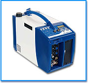
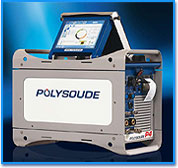
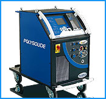
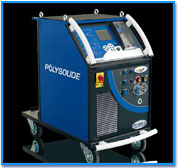
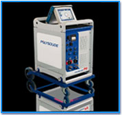
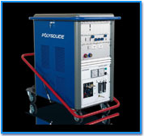
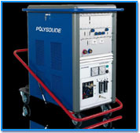

-
Tocar imagen para detallesPS 164 - 2
-
Tocar imagen para detallesP4Ideal para uso en sitio o en taller.
Fuente inteligente con procedimientos automáticos de soldadura y una interfase intuitiva para usuario. Fuente con inverter de alta precisión y con lo último de mayor confiabilidad en electrónica industrial. Fuente de alimentación monofásica.
Procesos TIG/GTAW para cabezales de soldadura por fusión Polysoude y cabezales que utilizan alambre frío de aporte.
-
Tocar imagen para detallesPS 254-2Ideal para uso en taller.
Fuente con recirculación de refrigeración integrada. Fuente con inverter de alta precisión para un suministro de calor perfectamente controlado y penetración de soldadura.
TIG/GTAW para todos los cabezales de fusión de Polysoude y cabezales con aporte de alambre frio.
-
Tocar imagen para detallesPS 406-2Ideal para uso en taller.
Fuente con recirculación integral de refrigeración. Fuente con inverter de alta precisión para un calor y penetración de soldadura perfectamente controlados. Contiene sistema AVC (Control del voltaje promedio) y control de oscilación.
TIG/GTAW para todos los cabezales de fusión de Polysoude y manipuladores de soldadura.
-
Tocar imagen para detallesP6Ideal para uso en taller.
Fuente con recirculación integral de refrigeración. Fuente con inverter de alta precisión para un calor y penetración de soldadura perfectamente controlados. Contiene sistema AVC (Control del voltaje promedio) y control de oscilación. Controla dispositivos periféricos (posicionadores, manipuladores) para soldadura mecanizada.
TIG/GTAW para todos los cabezales de soldar Polysoude y manipuladores de soldadura.
-
Tocar imagen para detallesPC 300TRPara ajustes precisos y rápidos.
Fuente con salida transistorizada de precisión. Diseño de arte con múltiples ondas de pulso de la salida. Especialmente diseñada con ingeniería para soldar un amplio rango de materiales.
TIG/GTAW para todos los cabezales de fusión de Polysoude y manipuladores de soldadura.
-
Tocar imagen para detallesPC 350 DCResuelve la mayoría de las aplicaciones de soldadura.
Fuente de poder evolucionada con controlador de soldadura integrado. Basada en inverter de salida DC.
TIG/GTAW para todos los cabezales de fusión de Polysoude y manipuladores de soldadura.
Soldadura orbital
Fuentes para soldadura Orbital
Fuente de poder con todas las funciones "todo incluido" con "data acquisition". Portátil, con total funcionamiento a control remoto. Fuente de poder con alimentación monofásica.
Procesos TIG/GTAW para cabezales de soldadura por fusión Polysoude y cabezales que utilizan alambre frío de aporte.